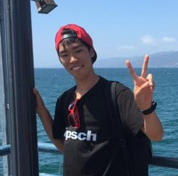

my favorite
・読書 ・サイクリング ・アニメ ・野菜(特にトマト) ・経済、企業の分析
history
 ・1998年2月7日生まれ、都立清瀬高校を卒業し、現在法政大学理工学部3年。 高校時代までは剣道、陸上競技、数学、哲学に勤しんでました。 大学1年の時にはUC Davisに1か月語学研修に行ったりもしました。
・現在は大学で医用画像工学の研究をしており、機械学習にも興味があります。 中国のサブカルの経済的側面に興味があり中国語を学んでいます。 経済や金融、企業分析は基本的に趣味で独学で学んでおり、この先証券アナリストに挑戦予定。
・将来は、Webアプリケーション開発能力を身に着け、広い視野で世の中の需給に目をやり、何か社会に価値を提供できるような存在になれれば、と考えています。